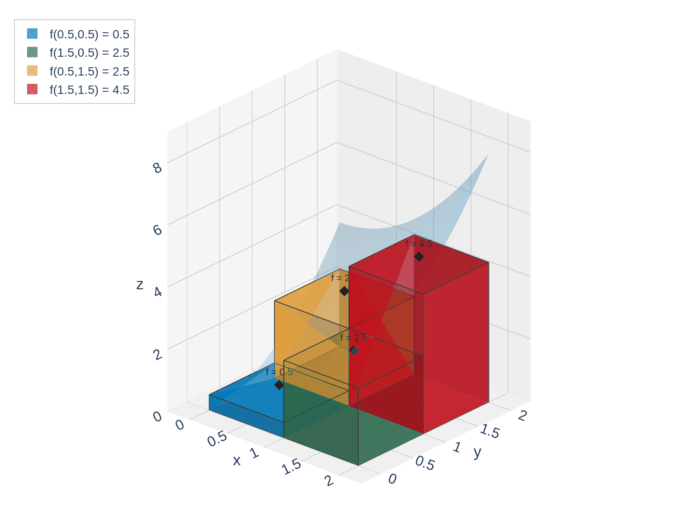
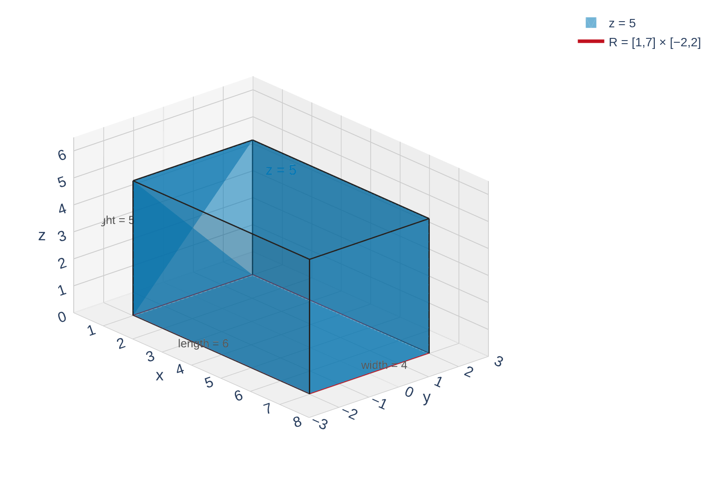
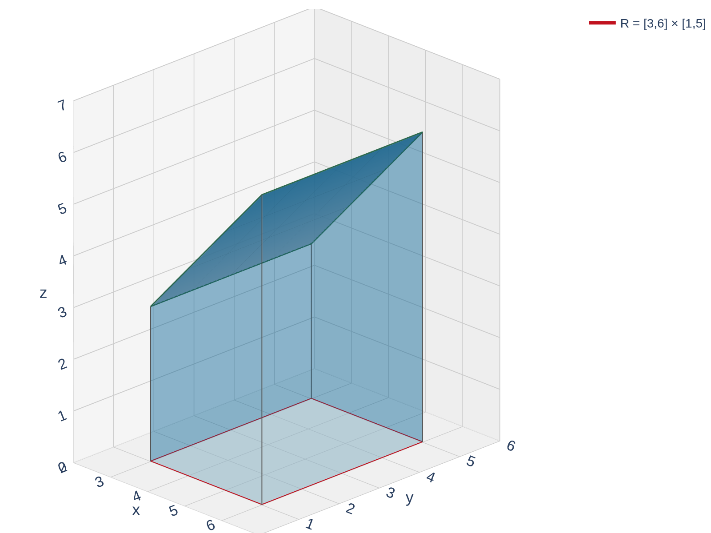

Section 15.1: Double Integrals over Rectangles
Multiple Integrals
MTH 310
Calculus III
From Calc I to Calc III
In Calculus I, the area under a curve \(y = f(x)\) over \([a,b]\) is the limit of Riemann sums:
\[\int_a^b f(x)\,dx = \lim_{n \to \infty} \sum_{i=1}^{n} f(x_i^*)\,\Delta x\]
Calc I: strips in 2D
![A 2D graph of y = x squared on [0,2] approximated by 8 midpoint Riemann sum strips shaded in blue. The red curve lies above the strips. This is the Calc I picture: area under a curve via rectangular strips.](figures/riemann_strips_1d.png)
Calc III: columns in 3D

Building a Double Riemann Sum
Suppose \(f(x,y) \geq 0\) is defined on the rectangle \(R = [a,b] \times [c,d]\).
Step 1: Partition the rectangle.
- Divide \([a,b]\) into \(m\) equal subintervals of width \(\Delta x = \frac{b-a}{m}\)
- Divide \([c,d]\) into \(n\) equal subintervals of width \(\Delta y = \frac{d-c}{n}\)
- This creates \(m \times n\) subrectangles, each with area \(\Delta A = \Delta x \cdot \Delta y\)
![A top-down diagram of the rectangle [0,2] by [0,2] divided into a 4 by 4 grid of 16 equal subrectangles shaded light blue. One subrectangle R_ij is highlighted in amber. Double-headed arrows along the bottom and left edges are labeled delta-x and delta-y.](figures/rectangle_partition.png)
Step 2: Choose sample points.
In each subrectangle \(R_{ij}\), choose a sample point \((x_{ij}^*, y_{ij}^*)\). Common choices: corners, midpoints, or random points.

Step 3: Build columns and add.
Each column has base area \(\Delta A\) and height \(f(x_{ij}^*, y_{ij}^*)\), so its volume is \(f(x_{ij}^*, y_{ij}^*)\,\Delta A\). The total volume is approximately:
\[V \approx \sum_{i=1}^{m}\sum_{j=1}^{n} f(x_{ij}^*, y_{ij}^*)\,\Delta A\]

The Double Integral
Double Integral over a Rectangle
The double integral of \(f\) over the rectangle \(R\) is:
\[\iint_R f(x,y)\,dA = \lim_{m,n \to \infty} \sum_{i=1}^{m}\sum_{j=1}^{n} f(x_{ij}^*, y_{ij}^*)\,\Delta A\]
provided this limit exists (in which case we say \(f\) is integrable over \(R\)).
Geometric interpretation:
- When \(f(x,y) \geq 0\): \(\iint_R f\,dA\) = volume under the surface and above \(R\)
- When \(f\) takes both signs: \(\iint_R f\,dA\) = (volume above \(R\)) \(-\) (volume below \(R\))
Example 1: Midpoint Approximation
Example 1
Let \(f(x,y) = x^2 + y^2\) and \(R = [0,2] \times [0,2]\). Approximate the volume under \(f\) over \(R\) by dividing \(R\) into a \(2 \times 2\) grid and using midpoints.
Your Turn: Midpoint Riemann Sum
Example 2
Let \(f(x,y) = xy\) and \(R = [0,1] \times [0,1]\). Approximate the volume under \(f\) over \(R\) using a \(2 \times 2\) grid and midpoints.
Geometric Interpretation of the Double Integral
When \(f(x,y) \geq 0\), the double integral \(\iint_R f\,dA\) gives the volume of the solid between the surface \(z = f(x,y)\) and the rectangle \(R\) in the \(xy\)-plane.
This means we can evaluate some double integrals by recognizing the solid as a familiar geometric shape.

Constant function: \(z = c\) over \(R\) is a box.
Volume \(= \text{length} \times \text{width} \times \text{height}\)

Linear function: \(z = x\) over \(R\) is a ramp/wedge.
Volume \(= \text{cross-sectional area} \times \text{depth}\)
Example 2: Volume of a Box
Example 2
Evaluate \(\displaystyle\iint_R 5\,dA\) where \(R = \{(x,y) \mid 1 \leq x \leq 7,\; -2 \leq y \leq 2\}\).
Your Turn: Geometric Interpretation
Without computing any integrals, what is \(\displaystyle\iint_R (1-x)\,dA\) where \(R = [0,1] \times [0,1]\)?
Hint: Sketch \(z = 1 - x\) over the unit square. What shape do you see?
Properties of Double Integrals
Double integrals obey the same linearity rules as single integrals.
Theorem: Properties of Double Integrals
If \(f\) and \(g\) are integrable over \(R\) and \(c\) is a constant:
- Constant multiple: \(\displaystyle\iint_R cf\,dA = c\iint_R f\,dA\)
- Sum/Difference: \(\displaystyle\iint_R (f \pm g)\,dA = \iint_R f\,dA \pm \iint_R g\,dA\)
- Comparison: If \(f(x,y) \geq g(x,y)\) for all \((x,y)\) in \(R\), then \(\displaystyle\iint_R f\,dA \geq \iint_R g\,dA\)
- Splitting: If \(R = R_1 \cup R_2\) where \(R_1\) and \(R_2\) don't overlap (except on edges), then \(\displaystyle\iint_R f\,dA = \iint_{R_1} f\,dA + \iint_{R_2} f\,dA\)

These properties follow directly from the corresponding properties of finite sums and limits. They'll be essential when we learn to compute double integrals via iterated integrals in the next section.
Looking Ahead: How Will We Actually Compute These?
So far, we've only evaluated double integrals by:
- Riemann sum approximations (Example 1)
- Geometric formulas for simple shapes (Example 2)
The big question: What about \(\displaystyle\iint_R e^{x+y}\,dA\) or \(\displaystyle\iint_R \sin(x^2 y)\,dA\)? We can't draw those as boxes or wedges!
Coming in Section 15.2: Fubini's Theorem tells us we can compute a double integral as two nested single integrals:
\[\iint_R f(x,y)\,dA = \int_a^b \left[\int_c^d f(x,y)\,dy\right]\,dx\]
This is called an iterated integral, and it reduces the problem to two Calc I integrals!